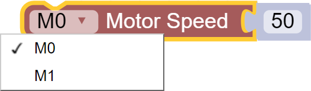
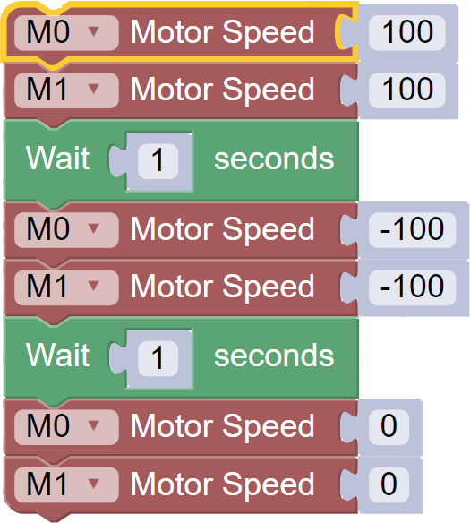
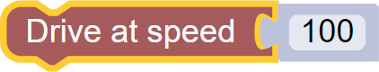
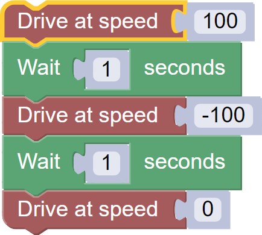
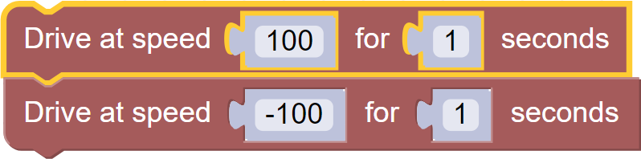
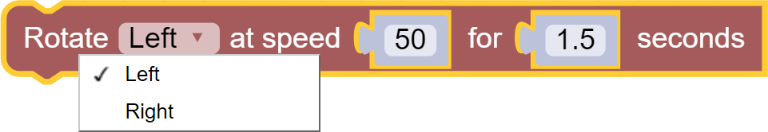
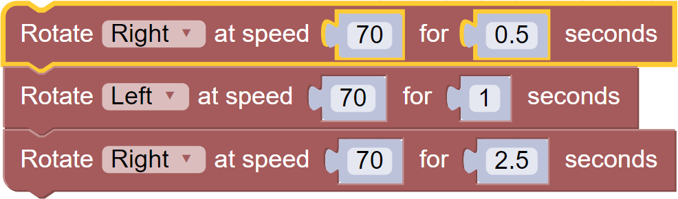

Motor Control
The Motor toolbox contains blocks for motor control.
- Connect via motor port M0 or M1. Connection is bidirectional.
- Motor Speed ranges from -100 to 100.
- Speed of 0 is a complete stop.
Motor Python Library Information
List of available blocks:
Motor Speed
Apply power to a single motor port from -100 to 100.
Block:

Code Produced:
f.motorSpeed(f.M0, 50)Example:

Code:
import Fusion import time f = Fusion.driver() f.motorSpeed(f.M0, 100) f.motorSpeed(f.M1, 100) time.sleep(1) f.motorSpeed(f.M0, -100) f.motorSpeed(f.M1, -100) time.sleep(1) f.motorSpeed(f.M0, 0) f.motorSpeed(f.M1, 0)
Drive at Speed
Drive both motor ports at a set speed from -100 to 100.
Block:

Code Produced:
f.motorSpeed(f.M0+f.M1, 100)Example:

Code:
import Fusion import time f = Fusion.driver() f.motorSpeed(f.M0+f.M1, 100) time.sleep(1) f.motorSpeed(f.M0+f.M1, -100) time.sleep(1) f.motorSpeed(f.M0+f.M1, 0)
Drive at Speed for Time
Drive both motor ports at a set speed from -100 to 100 for a set amount of time in seconds.
Block:
Code Produced:
Imports:
import timeCode:
# Drive forwards with 80% power for 15 seconds f.motorSpeed(f.M0+f.M1, 80) time.sleep(15) f.motorSpeed(f.M0+f.M1, 0)Example:

Code:
import Fusion import time f = Fusion.driver() # Drive forwards with 100% power for 1 seconds f.motorSpeed(f.M0+f.M1, 100) time.sleep(1) f.motorSpeed(f.M0+f.M1, 0) # Drive backwards with -100% power for 1 seconds f.motorSpeed(f.M0+f.M1, -100) time.sleep(1) f.motorSpeed(f.M0+f.M1, 0)
Rotate at Speed for Time
Rotate the robot either Left or Right at a set speed from -100 to 100 for a set amount of time in seconds. This results in one motor driving forward and the other motor driving backwards at the same speed.
Block:

Code Produced:
Imports:
import timeCode:
# Turn Left with 50% power for 1.5 seconds f.motorSpeed(f.M1, -50) f.motorSpeed(f.M0, 50) time.sleep(1.5) f.motorSpeed(f.M0+f.M1, 0)Example:

Code:
import Fusion import time f = Fusion.driver() # Turn Right with 70% power for 0.5 seconds f.motorSpeed(f.M1, 70); f.motorSpeed(f.M0, -70); time.sleep(0.5) f.motorSpeed(f.M0+f.M1, 0) # Turn Left with 70% power for 1 seconds f.motorSpeed(f.M1, -70) f.motorSpeed(f.M0, 70) time.sleep(1) f.motorSpeed(f.M0+f.M1, 0) # Turn Right with 70% power for 2.5 seconds f.motorSpeed(f.M1, 70); f.motorSpeed(f.M0, -70); time.sleep(2.5) f.motorSpeed(f.M0+f.M1, 0)
Questions?
Contact Boxlight Robotics at support@BoxlightRobotics.com with a detailed description of the steps you have taken and observations you have made.
Email Subject: Intermediate Motor Control